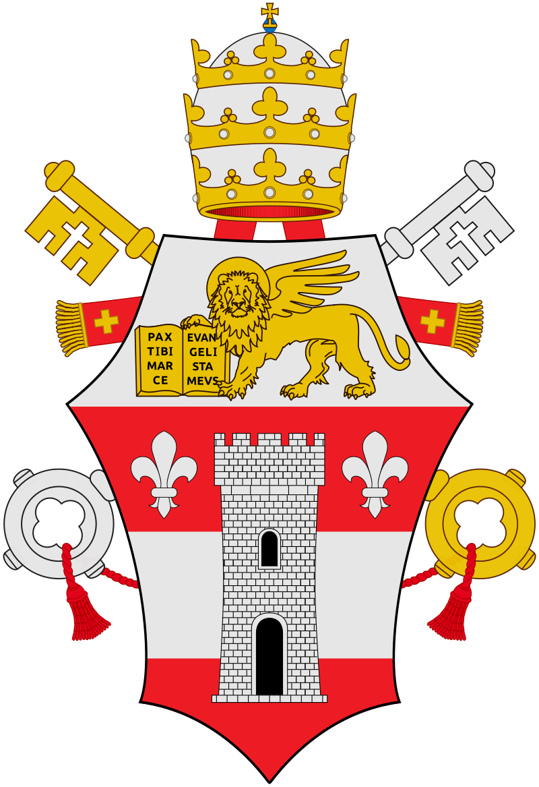
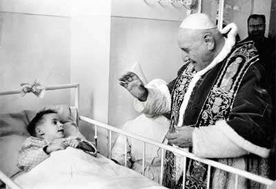

Angelo Giuseppe Roncalli nació el 25 de noviembre de 1881 en Sotto il Monte 🇮🇹, como el cuarto de trece hermanos, ese mismo día fue bautizado. Recibió la confirmación y la primera comunión en 1889; y en 1892 ingresó en el Seminario de Bérgamo.
De 1901 a 1905 alumno becado del Pontificio Seminario Romano. ordenado sacerdote el 10 de agosto de 1904. Inmediatamente después el Obispo Giacomo María Radini lo nombró su secretario, cargo que desempeñó hasta 1914.
Uno de sus primeros retos como sacerdote fue el acompañamiento y papel como mediador en la huegla de Ranica en 1909, donde los trabajadores exigian salarios y horarios justos de trabajo. Desde entonces Roncalli, dio cuenta de su profunda sensibilidad al reconocer que el problema no sólo era sobre cuestiones particulares de salarios, sino sobre el principio fundamental de la libertad y en la organización cristiana del trabajo frente a la insaciable satisfacción de la industria
En 1921 fue llamado a Roma 游游 por Benedicto XV como Presidente para Italia del Consejo central de la Pontificia Obra para la propagación de la Fe. Posteriormente fue ordenado Obispo el 19 de marzo de 1925 en Roma, eligiendo como lema episcopal "Oboedientia et pax" (Obediencia y paz). Fue Delegado Apostólico en Bulgaria 游游 hasta 1934, fue un asiduo promotor de paz en tiempos de guerra. Durante el Holocausto, en su carácter de representante papal en Bulgaria intercedió ante el rey Boris a favor de judíos búlgaros y, luego, ante el gobierno turco a favor de refugiados judíos que habían escapado a Turquia 🇹🇷.
También, hizo todo lo posible para evitar la deportación de judíos griegos 🇬🇷. Roncalli fue una de las principales fuentes de información del Vaticano sobre la aniquilación de millones de judíos en Polonia 🇵🇱 y Europa del este.
El 27 de noviembre de 1934 fue nombrado Delegado Apostolico en Turquía y Grecia. Y cuando estallló la Segunda Guerra Mundial, estaba en Grecia, desvastada por los combates.
Fue nombrado Nuncio Apostólico en París 游游 en 1944 para restablecer la Iglesia tras la guerra.
El 12 de enero de 1953 fue nombrado Cardenal y el día 25 fue promovido al Patriarcado de Venecia. Estaba contento de poder dedicarse los últimos años de su vida al ministerio directo de la cura de almas, cuando fue elegido Papa el 28 de octubre de 1958, tras la muerte de Pío XII, y tomó el nombre de Juan XXIII. En sus cinco años como Papa, el mundo entero pudo ver en él una imagen auténtica del "Papa Bueno". Su magisterio social está contenido en las Encíclicas Mater et magistra (Madre y maestra - 1961) y Pacem in terris (Paz en la tierra - 1963), esta última fue escrita en plena Guerra Fría luego de la llamada "Crisis de los misiles" de octubre de 1962, en la que la Unión Soviética instaló misiles nucleares en Cuba, amenazando a Estados Unidos; en la Encíclica el Papa promueve la paz que tiene a la verdad como fundamento, a la justicia como regla, el amor como motor y a la libertad como su cima.

En la enseñanza de Juan XXIII hay referencias explícitas a los derechos fundamentales del hombre y a las exigencias de la dignidad de la persona. Fue promotor incansable de la paz y heraldo del diálogo ecumenico e interreligioso.
Convocó el Concilio Ecuménico Vaticano II, pero no pudo verlo concluido, ya que murió la tarde del 3 de junio de 1963, el día siguiente de Pentecostés. Aún así el Concilio prosiguió con el espíritu de renovación eclesial que él promovió por medio de la apertura al mundo y colocando a la persona al centro de la religión.
Juan XXIII fue declarado beato por el Papa Juan Pablo II el 3 de septiembre de 2000 en la Plaza de San Pedro, durante la celebración del Gran Jubileo del año 2000.
El Papa Francisco canonizó a Juan XXIII el 27 de abril de 2014.